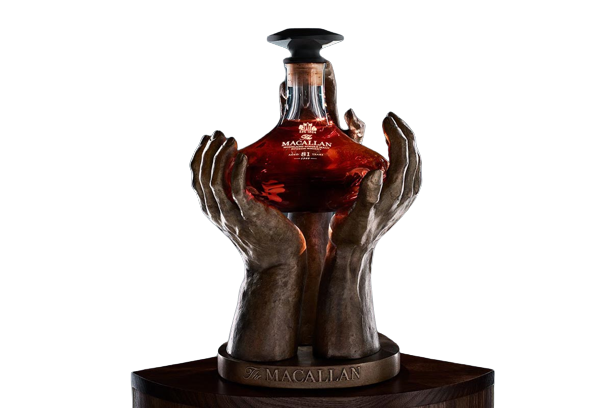
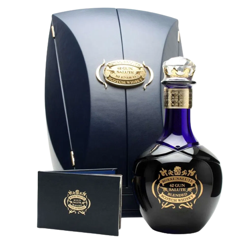

In 2012, we celebrated sixty years since Her Majesty Queen Elizabeth II came to the throne of the United Kingdom.
A Diamond Jubilee is rare and remarkable occasion, which John Walker & Sons, holders of the Royal Warrant, marked with a rare and
remarkable whisky.

Macallan 81
Un whisky vechi de 81 de ani, distilat în 1940, acest spirtoase
este obținut dintr-un singur butoi de stejar cu condimente de sherry și este cea mai veche expresie lansată
de The Macallan până în prezent.

Royal Salute 62
One of the most special and artisanal blended whiskeys in the world, as well as having malts aged for at least 40 years,
Its bottle and cap are made of handmade crystal with decorative elements in 24 carat gold.